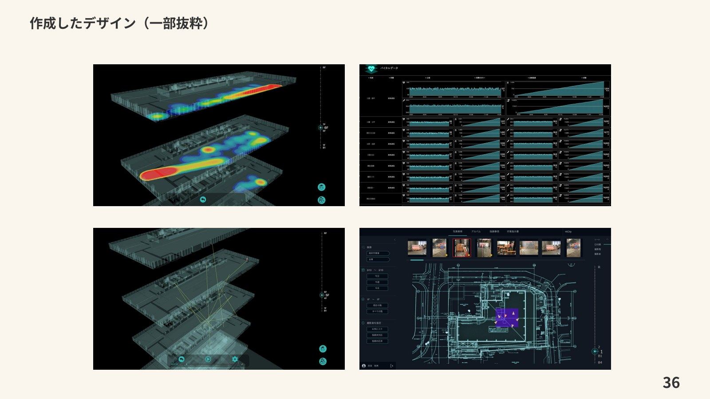

アジアクエスト株式会社での制作実績
3DKフィールド
建設業界の生産性向上を目指す、建設DXのプロジェクト。建築工事の生産プロセスを支えるPC向けUIデザインを担当しました。
担当：UIデザイン作成
プロジェクト概要
「建設業界の2024年問題」に向け、建築工事に関わる生産プロセスの変革と生産性向上を目指すプロジェクトです。
制作期間・体制
2023年5月〜2023年12月。PM2名、デザイナー1名、エンジニア8名の体制でUIデザインを担当しました。



アジアクエスト株式会社での制作実績
建設業界の生産性向上を目指す、建設DXのプロジェクト。建築工事の生産プロセスを支えるPC向けUIデザインを担当しました。
担当：UIデザイン作成
「建設業界の2024年問題」に向け、建築工事に関わる生産プロセスの変革と生産性向上を目指すプロジェクトです。
2023年5月〜2023年12月。PM2名、デザイナー1名、エンジニア8名の体制でUIデザインを担当しました。
